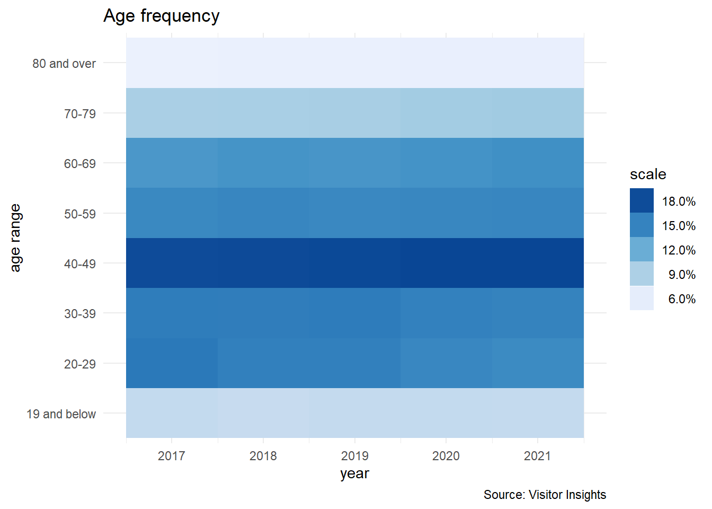
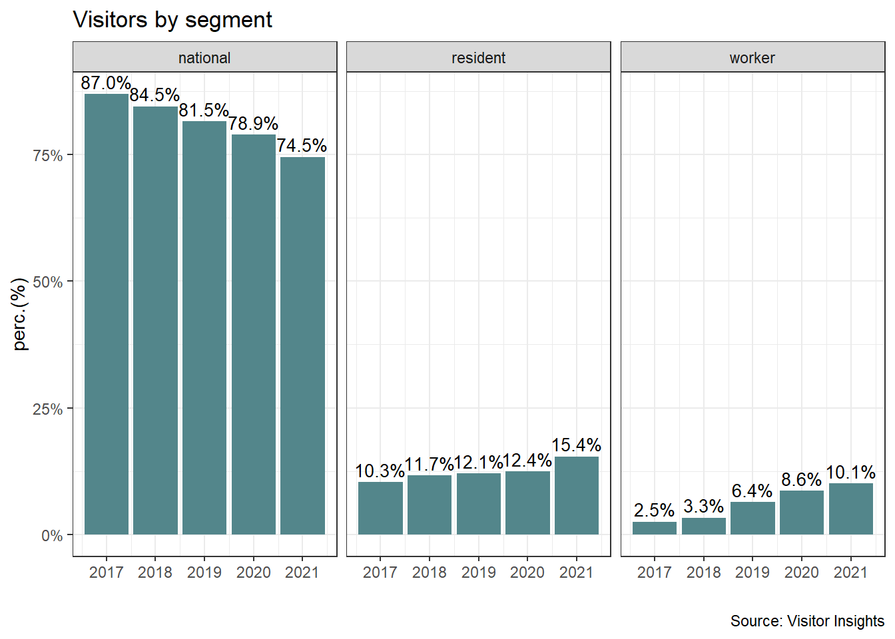

4 Visitor Profile
4.1 Age Distribution
data_age <- read.csv("C:/Users/Laurent/OneDrive - ROCS/VI/visit_age.csv", header=TRUE, fileEncoding="UTF-8-BOM")
data_age <- data_age %>%
pivot_longer(c(`up_to_19`, `age_20_to_29`, `age_30_to_39`, `age_40_to_49`, `age_50_to_59`, `age_60_to_69`, `age_70_to_79`, `age_80_and_over`), names_to = "age", values_to = "pct")
# recoding the factor season
data_age <- data_age %>%
mutate(age = fct_recode(age,
"19 and below" = "up_to_19",
"20-29" = "age_20_to_29",
"30-39" = "age_30_to_39",
"40-49" = "age_40_to_49",
"50-59" = "age_50_to_59",
"60-69" = "age_60_to_69",
"70-79" = "age_70_to_79",
"80 and over" = "age_80_and_over"))
data_age <- data_age %>%
mutate(age = fct_relevel(age,
"19 and below", "20-29", "30-39",
"40-49", "50-59", "60-69","70-79", "80 and over" ))
g15 <- ggplot(data_age , mapping = aes(
x = year,
y = age)) +
geom_tile(mapping = aes (fill = pct)) +
scale_fill_distiller(labels = percent, trans = 'reverse') +
theme_minimal() +
labs(y="age range",
x="year",
title="Age frequency",
caption = "Source: Visitor Insights")
g15 +
guides(fill = guide_legend( label.hjust = 1, reverse = TRUE, title = "scale"))
4.2 Visitor’ s Origin
data_segment <- read.csv("C:/Users/Laurent/OneDrive - ROCS/VI/segment_visits.csv", header=TRUE, fileEncoding="UTF-8-BOM")
segment_filtered <- filter (data_segment, segment == "national"| segment == "resident" | segment == "worker")
g7 <- ggplot(segment_filtered, aes(fill= segment, y= pct, x= year)) +
geom_bar(position="dodge", stat="identity", fill = "cadetblue4") +
geom_text(aes(label = scales::percent((pct),0.1),
y = pct,
group = year,),
position = position_dodge(width = 0.9),
vjust = -0.4,
colour="black",
size = 3.5) +
ggtitle("Studying 4 species..") +
facet_wrap(~segment) +
theme_bw() +
scale_y_continuous(labels=percent) +
xlab("")+
labs(y="perc.(%)",
x="",
title="Visitors by segment",
caption = "Source: Visitor Insights")
g7